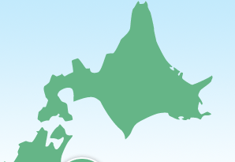
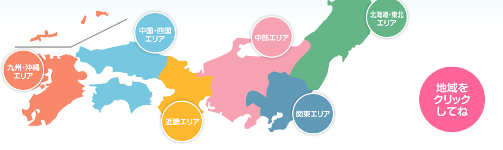
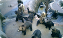
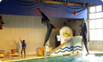
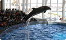
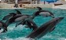
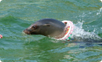
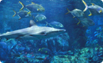

のぼりべつクマ牧場
岩手サファリパーク
東北サファリパーク

おたる水族館
登別マリンパークニクス
オホーツクとっかりセンター
浅虫水族館
アクアマリンふくしま
宇都宮動物園
那須サファリパーク
那須ワールドモンキーパーク
那須どうぶつ王国
桐生が岡動物園（桐生が岡公園）
群馬サファリパーク
東筑波ユートピア
市原ぞうの国
横浜市立金沢動物園
よこはま動物園ズーラシア

アクアワールド・大洗
鴨川シーワールド
山梨県立富士湧水の里水族館
横浜・八景島シーパラダイス
サンシャイン国際水族館
エプソン品川アクアスタジアム
箱根園水族館
よしもとおもしろ水族館
伊豆シャボテン公園
富士サファリパーク
豊橋総合動植物公園（のんほいパーク）
大町山岳博物館
日本モンキーセンター
富山市ファミリーパーク
高岡古城公園動物園
奥飛騨クマ牧場

マリンピア日本海
魚津水族館
のとじま水族館
越前松島水族館
伊豆・三津シーパラダイス
下田海中水族館
東海大学海洋科学博物館
伊豆アンディランド
名古屋港水族館
南知多ビーチランド
淡島マリンパーク
池田市立五月山動物園
みさき公園
ひらかたパーク
神戸市立王子動物園
姫路セントラルパーク
淡路ファームパーク イングランドの丘
和歌山公園動物園
嵐山モンキーパーク
神戸花鳥園
鳥羽水族館
志摩マリンランド
二見シーパラダイス
滋賀県立琵琶湖博物館
丹後魚っ知館
海遊館
水道記念館
太地町立くじらの博物館
串本海中公園
神戸市立須磨海浜水族園
すさみ町立エビとカニの水族館
鳥羽イルカ島
池田動物園
松江フォーゲルパーク
広島市安佐動物公園
秋吉台サファリランド
渋川動物公園
愛媛県立とべ動物園
とくしま動物園
わんぱーくこうちアニマルランド
しろとり動物園

宮島水族館
島根県立しまね海洋館アクアス
宍道湖自然館ゴビウス
下関市立しものせき水族館 海響館
なぎさ水族館
日和佐ウミガメ博物館
桂浜水族館
新屋島水族館
長崎バイオパーク
ネオパークオキナワ（名護自然動植物公園）

マリンワールド海の中道
大分マリーンパレス水族館うみたまご
沖縄美ら海水族館
わくわく海中水族館シードーナツ
屋久島うみがめ館
OMRCオキナワマリンリサーチセンター